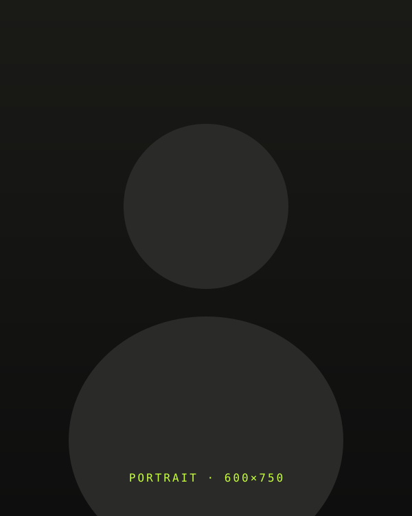
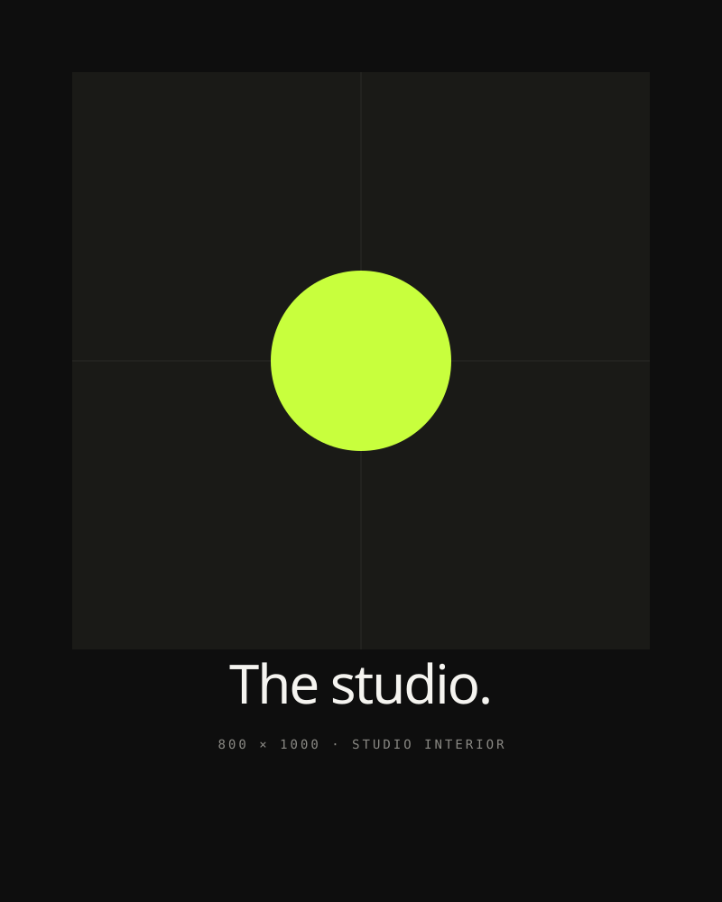
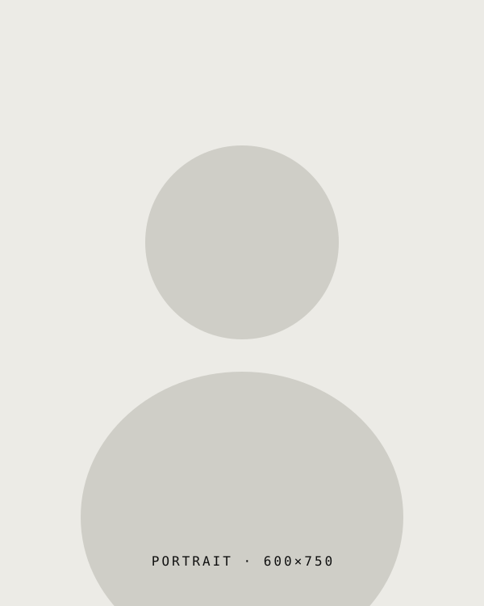
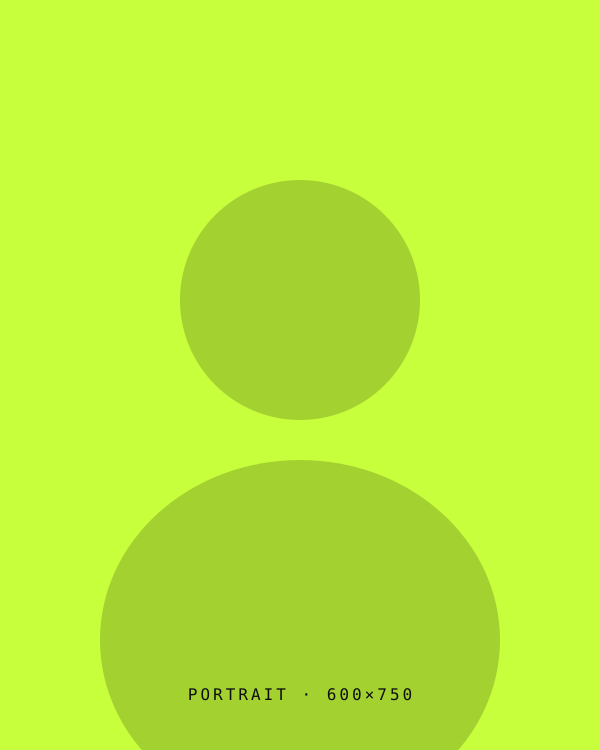
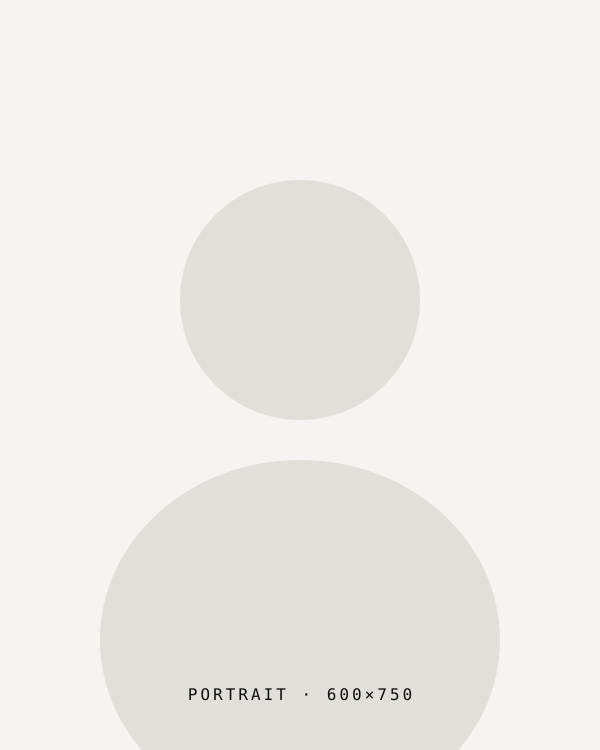

Mira Halden
Founder · Brand & StrategyEight years at climate & nonprofit brands before Axioma. Edits the studio's reading list and runs every kickoff.
Index → Studio
Axioma was founded in 2017 by Mira Halden and Tomás Reyes after eight years inside larger agencies. We've stayed deliberately small ever since.

The studio started as a side project. Mira was running brand at a venture-backed climate company; Tomás was leading design at a New York editorial agency. We took on a single project together — a rebrand for a small Brooklyn architecture firm — and the way it ran felt different enough to keep going.
What "different" meant: we wrote a treatment before we did any design. We negotiated scope by what would actually be useful, not by what was billable. We staffed the project with three people who all stayed until the launch. The work shipped on time, the firm hired us back the following year, and we left our jobs the following spring.
Eight years later we're still organized the same way. Eleven people across New York and Mexico City. Engagements run by a senior designer and a strategist, not by a producer and an account director. Every project gets an internal critique, an external reader, and a written kickoff and close-out memo that lives in our archive.
We work mostly with founders and operators in their second or third year — the moment when the early identity stops carrying the company. Our favorite engagements are the ones where the conversation slows down, the brief gets re-written, and we find we're really making something we wouldn't have written down at the start.

Eight years at climate & nonprofit brands before Axioma. Edits the studio's reading list and runs every kickoff.

Editorial-trained designer. Runs the Mexico City studio and oversees every brand identity engagement.

Leads the studio's web & product practice. Writes about typography on the side and teaches a yearly workshop in Brooklyn.

Trained as a filmmaker. Runs every motion engagement from concept through colour, with a small bench of trusted directors.
Most projects fail in the first three weeks. We spend longer than feels reasonable in discovery so the rest of the engagement isn't a series of corrections.
Every project is staffed by people who could run it on their own. There is no junior layer translating senior intent.
We arrive at meetings with a clear point of view. You don't have to choose from a deck of options that none of us actually like.
Every kickoff, every critique, every close-out gets a written memo. The archive is how the studio learns.
An identity that only works on launch day isn't an identity. We design systems that hold up after the launch noise dies down.
We turn down most enquiries. The fits we take on get the studio's full attention — that math only works one way.
A small selection. The full list is on request.
We're a flat studio of eleven and we keep it that way on purpose. We open one or two roles a year, mostly at the senior level, and we always hire someone we already know — through past collaboration, a workshop, or a long correspondence.
If you'd like to be in that pool when something opens, send a note with three projects you're proud of and a sentence about why. We read every one. We're slower than ideal to reply, but we always reply.
careers@axioma.studio →